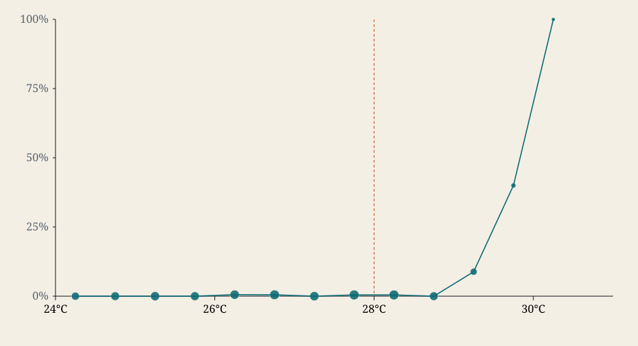
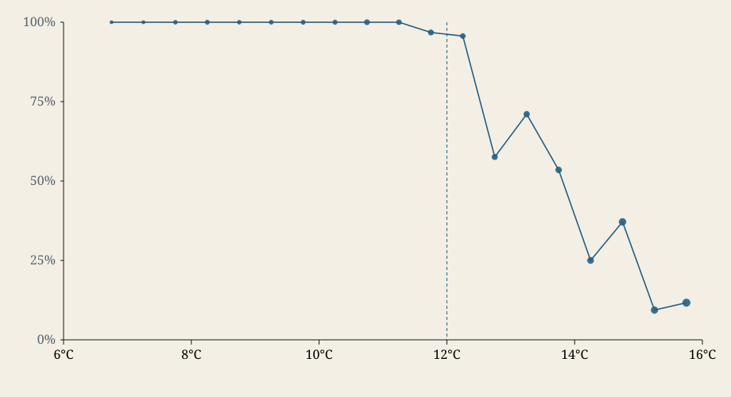
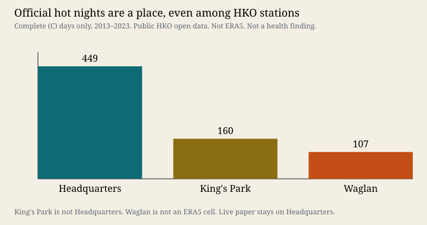
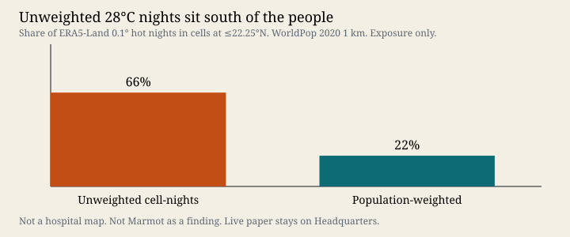

Laidlaw Heat Project · identification laboratory
ERA5 almost never calls a 28°C night until Headquarters is already ≥29°C. Forty-eight of fifty-seven official hot-night months are invisible to the grid. The live paper stays on Headquarters. This room is exposure identification, not form 2a, and not a health finding.
After calendar-month indicators, a hot-night coefficient is identified on how many nights an already-hot month contained. June–September always had at least one. July 2013 had 1 night; July 2022 had 25. That is the paper object. The reliability curve below explains why a second thermometer cannot reconstruct it.
HKO Headquarters, 2013–2023. Each cell is a count of nights with Tmin ≥ 28°C.
On a narrow screen, scroll this grid sideways. June–September are always on (11/11 years).
P(ERA5 Tmin ≥ 28°C | HKO Tmin in a 0.5°C bin). 4,017 matched nights. Titles and the legend sit here, not on the plot.

Choose a bin. The rate is reported here, under the figure, never as a label on the points.
P(ERA5 Tmin ≤ 12°C | HKO Tmin in a 0.5°C bin). Opposite bias. Companion panel, not a third public essay.

Six live-paper encodings. Four columns: what survives month indicators; how much of that residual is intensity versus on/off; which family the encoding belongs to; whether a second thermometer corroborates it. Hogan-first, supplement-grade, monthly grain.
| Encoding | Identifying share | Intensive / extensive | Family | Instrument |
|---|
Companion grain only. Thirteen of fourteen sit inside a Headquarters hot-night run. Only 23 July 2014 is isolated. Step the same dates on the instrument.
| Date | HKO Tmin | ERA5 Tmin | Place in HKO run | Run length |
|---|
Public HKO open data, 2013–2023, completeness C. This splits siting from instrument. It is not a validation of ERA5. The live paper stays on Headquarters.

WorldPop 2020 1 km × the 0.1° ERA5 lattice. Exposure only. Not a hospital map, not a Marmot finding, not a T2D/HTN denominator.

A twelve-month shift of a seasonal count flag does not collapse identifying share. That share is a calendar-month property. The useful negative control is health in year t against exposure in year t−1. That re-fit stays Gate-3-open and does not run without the gitignored HA panels. No new q. Not a headline.